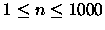
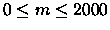
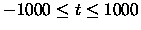

In the year 2163, wormholes were discovered. A wormhole is a subspace tunnel
through space and time connecting two star systems. Wormholes have a few
peculiar properties:
- Wormholes are one-way only.
- The time it takes to travel through a wormhole is negligible.
- A wormhole has two end points, each situated in a star system.
- A star system may have more than one wormhole end point within its boundaries.
- For some unknown reason, starting from our solar system, it is always possible to end up in any star system by following a sequence of wormholes (maybe Earth is the centre of the universe).
- Between any pair of star systems, there is at most one wormhole in either direction.
- There are no wormholes with both end points in the same star system.
All wormholes have a constant time difference between their end points. For
example, a specific wormhole may cause the person travelling through it to
end up 15 years in the future. Another wormhole may cause the person to end
up 42 years in the past.
A brilliant physicist, living on earth, wants to use wormholes to study the
Big Bang. Since warp drive has not been invented yet, it is not possible for
her to travel from one star system to another one directly. This can be done using wormholes, of course.
The scientist wants to reach a cycle of wormholes somewhere in the universe
that causes her to end up in the past. By travelling along this cycle a lot
of times, the scientist is able to go back as far in time as necessary to
reach the beginning of the universe and see the Big Bang with her
own eyes. Write a program to find out whether such a cycle exists.
The input file starts with a line containing the number of cases c to be
analysed. Each case starts with a line with two numbers n and m . These
indicate the number of star systems (
)
and the number of
wormholes (
)
. The star systems are numbered from 0 (our solar
system) through n-1 . For each wormhole a line containing three integer
numbers x, y and t is given. These numbers indicate that this wormhole
allows someone to travel from the star system numbered x to the star system
numbered y, thereby ending up t (
)
years in the future.
The output consists of c lines, one line for each case, containing the word
possible if it is indeed possible to go back in time indefinitely, or not possible if this is not possible with the given set of star systems and
wormholes.
2
3 3
0 1 1000
1 2 15
2 1 -42
4 4
0 1 10
1 2 20
2 3 30
3 0 -60
possible
not possible
Miguel A. Revilla
1998-03-10